U1. El comercio y las finanzas internacionales. Patrones, tendencias y evidencias.
Comercio y Finanzas Internacionales [UCC]
¿Por qué estudiar economía internacional?
Razones y motivaciones
- Los países y estados pueden (y lo hacen) restringir el movimiento internacional de bienes/servicios y de factores productivos
- Los movimientos internacionales de factores de producción (inmigración, IED) son frecuentemente más severamente restringidos (en relación al comercio en bienes y servicios)
- …restricciones más severas casi siempre son hacia el trabajo/inmigración [cfr. situación actual en UK]
- El tema es esencialmente empírico -averiguar cuáles son las fuerzas dominantes
Razones y motivaciones (cont.)
- Las tecnologías de producción no fluyen con facilidad a través de las fronteras
- Diferencias muy grandes en las tecnologías de producción entre países –no sólo diferencias en la disponibilidad física de factores productivos
- El uso de ciertas tecnologías está atado al capital humano
- …que no puede ser transferido entre países
- Instituciones tienen impacto en la efectividad de la tecnologías
- Infraestructura de transporte y comunicación
- Sistema legal
- Instituciones del mercado de trabajo
Razones y motivaciones (cont.)
- Alternativamente, muchos países permiten e incentivan el comercio interno dentro de fronteras nacionales
- Constitución de US tiene cláusula de comercio interestatal
- Regula el movimiento de toda forma de personas, bienes y servicios
- …como también transporte y comunicación entre estados
- Constitución de US tiene cláusula de comercio interestatal
- Similar en Argentina \(\longrightarrow\) CN en artículos 10 y 11 explicitan que es libre la circulación de bienes y servicios de producción nacional y de todo lo que ya hubiera entrado por aduanas externas
- …además serán libres de derechos y aranceles
Comercio: nacional vs internacional
- ¿Por qué entonces el comercio internacional es tan diferente del comercio nacional?
- En primer lugar, factores de producción y tecnologías de producción son en general específicos de los países
- Los países tienen potestad para restringir el comercio internacional
- Porque muchos políticos se oponen al comercio internacional
- Porque muchos consumidores (votantes) se oponen al comercio internacional
Políticos y comercio
Políticos y comercio (cont.)
Políticos y comercio (cont.)
Políticos y comercio (cont.)

Preferencias: individuos:
- Preferencias de ciudadanos ante el comercio internacional no siempre son informadas
- Individuos no tienen por qué conocer cómo afecta el comercio internacional a la economía tanto en lo macro como micro
- Aún si conocieran perfectamente todos los efectos, hay problemas
- Individuos tienen diferentes roles
- Productores de bienes transables y no transables
- Consumidores de bienes transables y no transables
- Trabajadores
- Individuos tienen diferentes roles
- Opiniones pueden ser segadas en función de contenido informativo
Preferencias: individuos (cont.)
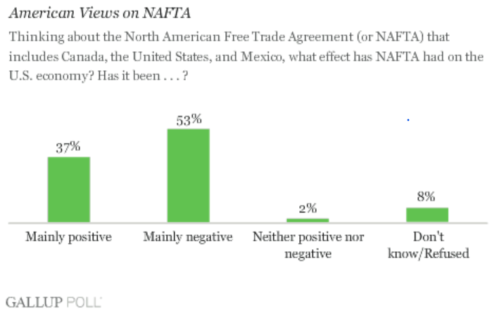Preferencias: individuos (cont.)
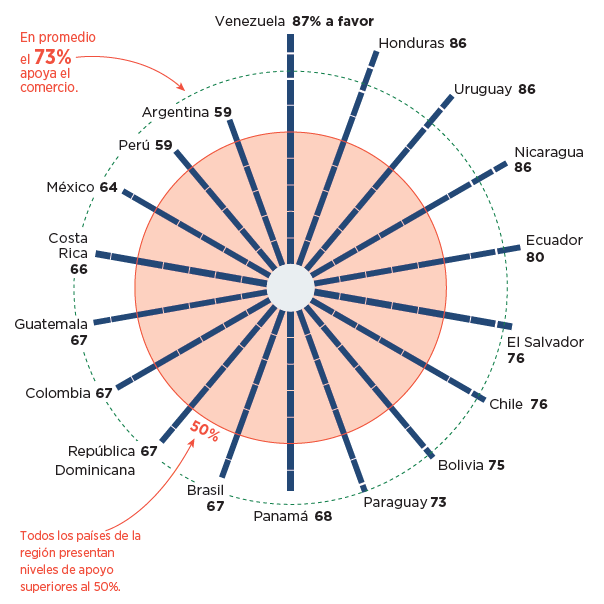Preferencias: individuos (cont.)
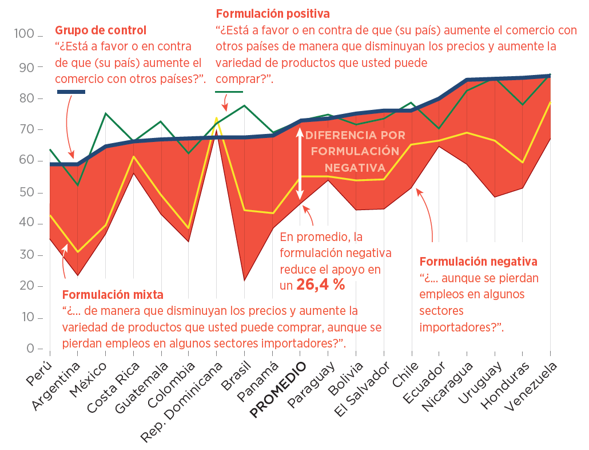Pero los economistas…
- Están mayoritariamente a favor del libre comercio –lo cual significa mucho a la luz de las significativas diferencias entre los economistas
- Tienden a coincidir en que en promedio los ciudadanos de EEUU han tenido mejor bienestar con el NAFTA que sin el mismo
- En general tienden a ponderar los beneficios del comercio a largo plazo al recomendar eliminar el proteccionismo
- Sin embargo \(\longrightarrow\) debate intenso sobre efectos distributivos asociados al libre comercio
…tienden a estar de acuerdo
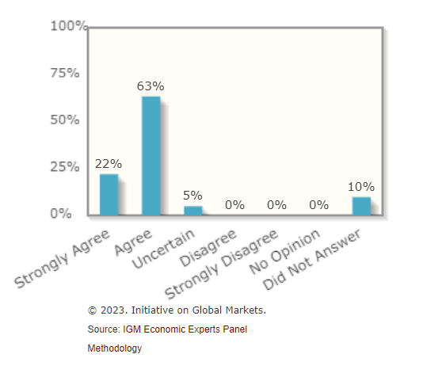Estudio de la economía internacional
- Existen dos grandes ramas de la economía internacional
- comercio internacional –énfasis en transacciones reales
- conficto EEUU-UE en torno a los subsidios a las exportaciones agrícolas de la UE
- finanzas internacionales –énfasis en aspectos monetarios de la economía internacional
- controversia sobre si el tipo de cambio debe flotar libremente o debe ser administrado
- comercio internacional –énfasis en transacciones reales
- En esta materia, comercio internacional será cubierto en las primeras 5 (cinco) unidades mientras que finanzas internacionales será el tema de las unidades 6 a 9.
Globalización
El mundo global
“¡Qué extraordinario episodio del progreso económico del hombre llegó a su fin en agosto de 1914!…Los habitantes de Londres podían pedir por teléfono, mientras se tomaban el té de la mañana en la cama, productos de todo el mundo, en las cantidades que más gustasen y esperar que fueran prontamente entregados a la puerta de su casa”
[John Maynard Keynes, Las Consecuencias Económicas de la Paz (1919)]
Globalización: naturaleza
- “Incremento en las transacciones internacionales en los mercados de bienes, servicios and factores” [Deardorff and Stern]
- Crecimiento y alcance expandido de instituciones y organizaciones internacionales
- Corporaciones multinacionales
- Instituciones interancionales: ONU, Banco Mundial, FMI, OMC
Globalización: medición
- Varias medidas posibles
- Flujos comerciales: exportaciones (X) e importaciones (M) de bienes y servicios
- Comercio de servicios: transporte, telecomunicaciones, consultoría, IT, call center
- Propiedad de activos extranjeros
- Inmigración
- Convergencia de precios: posibilidad de comercio puede tener importantes efectos
M1: Flujos comerciales
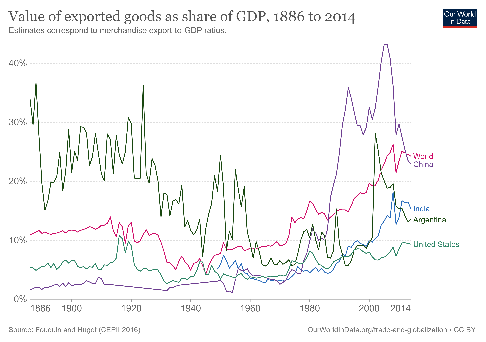M1: Flujos comerciales (cont.)
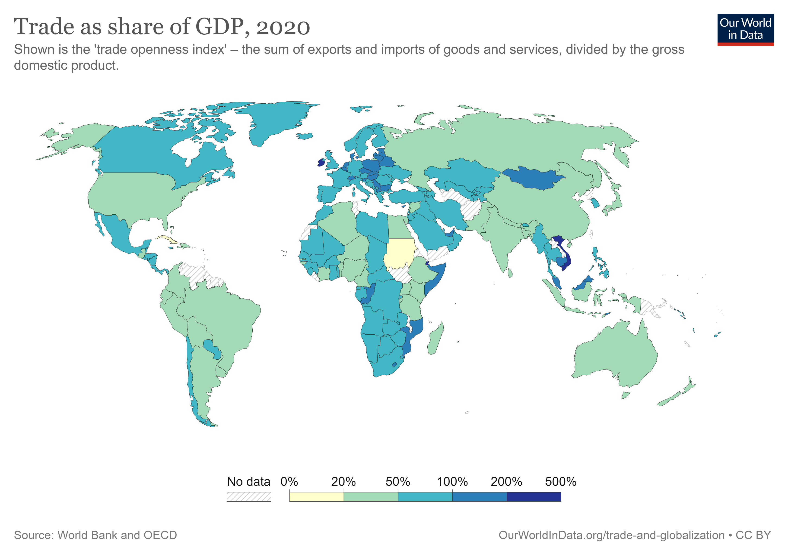M2: Exportaciones de servicios
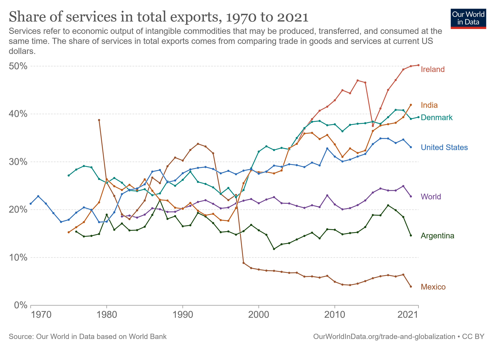M2: Exportaciones de servicios (cont.)
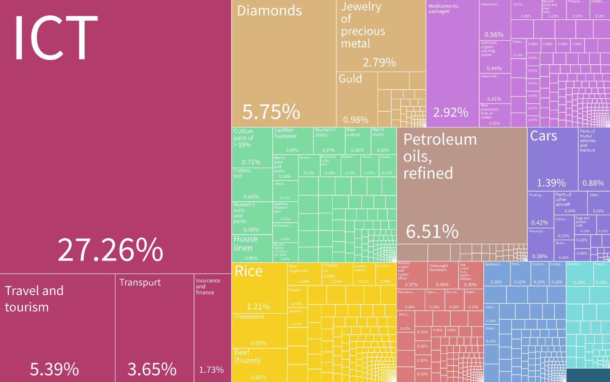
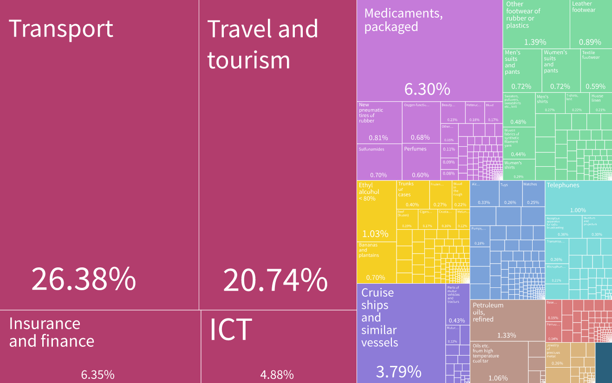
M3: Activos extranjeros
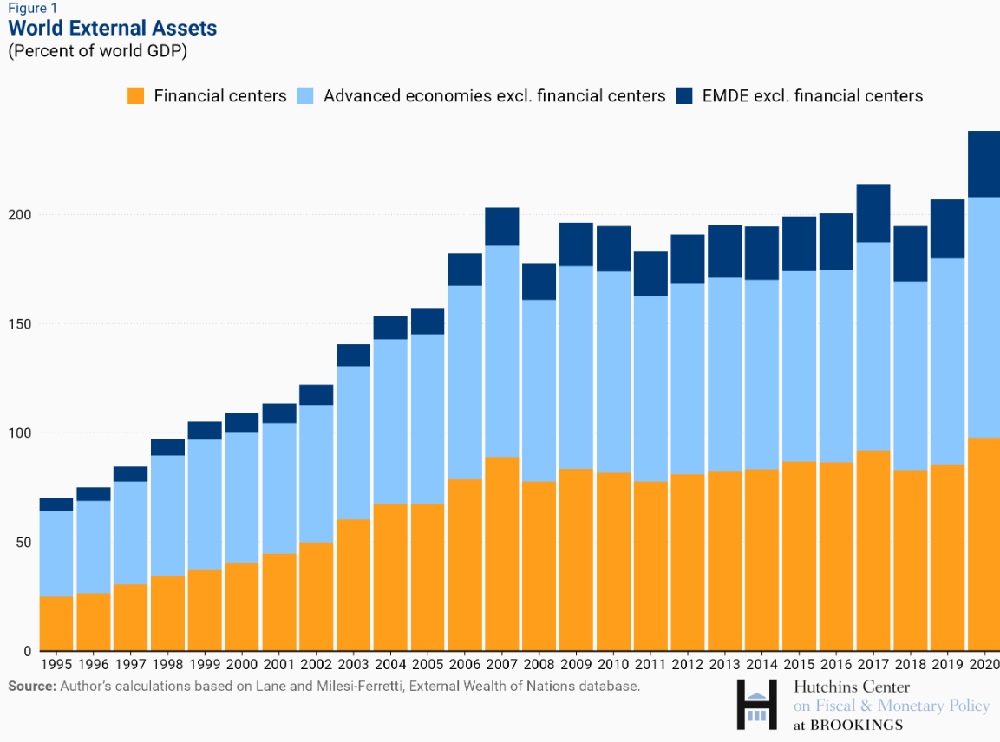M3: Activos extranjeros
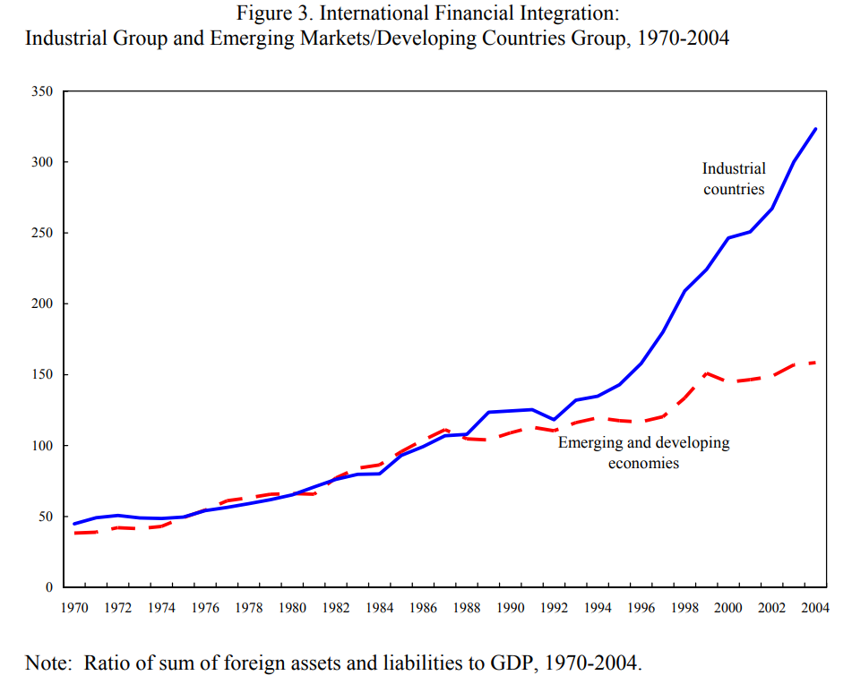M4: Migración internacional
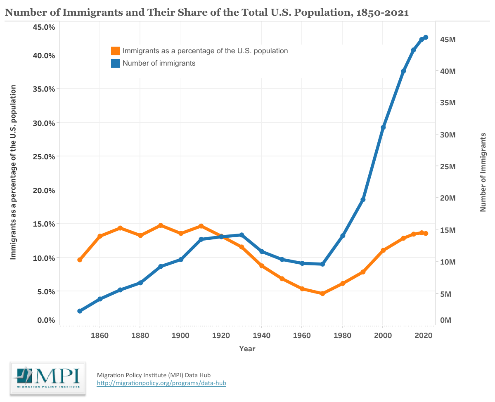M5: Converencia de precios
- Caída en costos de transporte en siglo XIX llevaron a mucha mayor convergencia de precios incluso considerando desde la 2GM
- Precios de granos en Chicago y Liverpool
- 60% de diferencia en 1870 a 15% de diferencia en 1912!
- Precios de granos en Chicago y Liverpool
- Lo mismo aplica para la convergencia de salarios
- Principal fenómeno de convergencia en salarios reales mucho mayor en siglo XIX que en 2GM
Causas de la globalización
Causas de la globalización
- Siglo XIX \(\longrightarrow\) innovación tecnológica trae aparejado disminuiciones en los costos de transporte y comunicación
- Disminución y quita de tarifas y aranceles \(\longrightarrow\) advenimiento de GATT y OMC
Causas de la globalización (cont.)
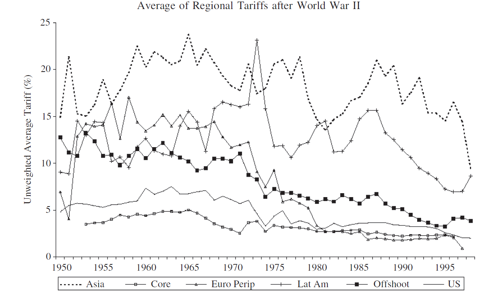
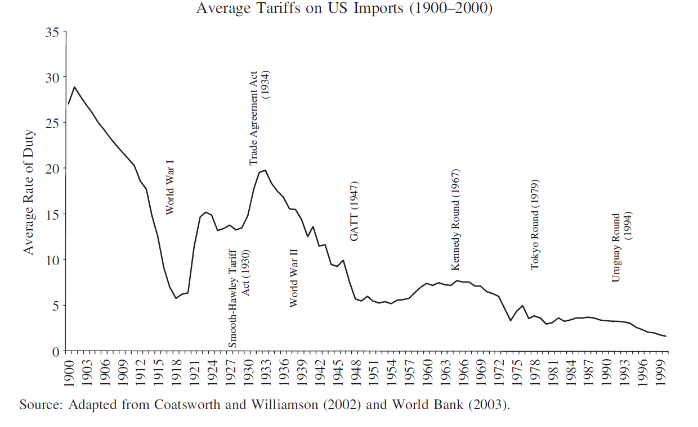
Causas de la globalización (cont.)

Patrones de comercio
¿Quién comercia con quién?
Una de las explicaciones más robustas y tradicionales de los patrones de comercio entre países es la dada a través del modelo de gravedad del comercio mundial. El nombre se debe a la analogía con la ley de la gravedad de Newton: al igual que la atracción de la gravedad entre dos objetos cualesquiera es proporcional al producto de sus masas y disminuye con la distancia, el comercio entre dos países cualesquiera es proporcional al producto de su PIB y disminuye con la distancia, ceteris paribus.
El modelo de gravedad
- Muchos trabajos predicen el comercio entre países a través de una sóla ecuación:
\[\begin{equation} T_{ij}=\frac{A Y_i Y_j}{D_{ij}} \end{equation}\]
- ¿Por qué funciona esta ecuación? economías grandes tienden a gastar mucho en (\(M\))
- comercio entre dos países cualesquiera aumenta cuánto más grande sea cualquiera de las economías implicadas
- Pero en la práctica, tanto la UE como EEUU atraen sólo un 2% del gasto del otro y representan cada uno un 25% del PIB mundial!
El modelo de gravedad (cont.)
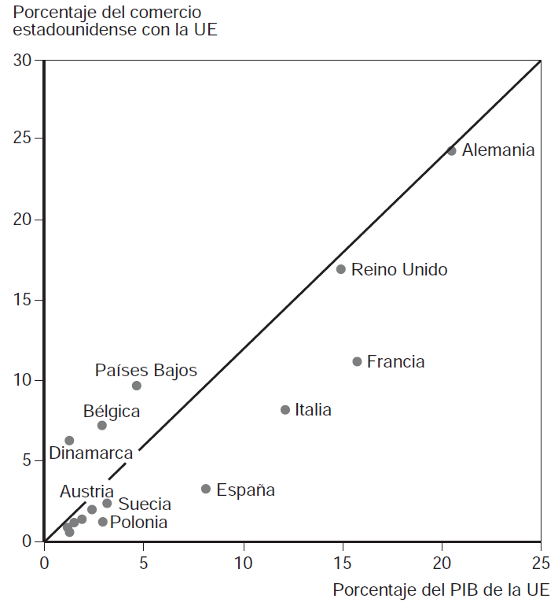El modelo de gravedad (cont.)
- El modelo de gravedad ajusta los datos relativamente bien –pero no perfecto
- Ejemplo \(\longrightarrow\) Países Bajos, Bélgica e Irlanda comercian mucho más con EEUU de lo que predice el modelo de gravedad
- Con Irlanda \(\longrightarrow\) afinidad cultural, histórica e idiomática
- Con Bélgica/Países Bajos \(\longrightarrow\) posible efecto de costos de transporte y geografía [Rotterdam, Amberes]
Obstáculos al comercio
- El rol de la distancia \(\longrightarrow\) Canadá y Méjico comercian mucho más con EEUU que lo que lo hacen economías de similar tamaño en la UE
- mayoría de modelos estimados encuentran que un aumento de 1% en la distancia entre 2 (dos) países disminuye el comercio entre un 0.7 y 1%
- Pero además hay otro elemento \(\longrightarrow\) EEUU, Canadá y Méjico forman parte de un acuerdo comercial, conocido como NAFTA –implica que no hay aranceles (salvoe excepciones) para el comercio entre esos países
Obstáculos al comercio (cont.)
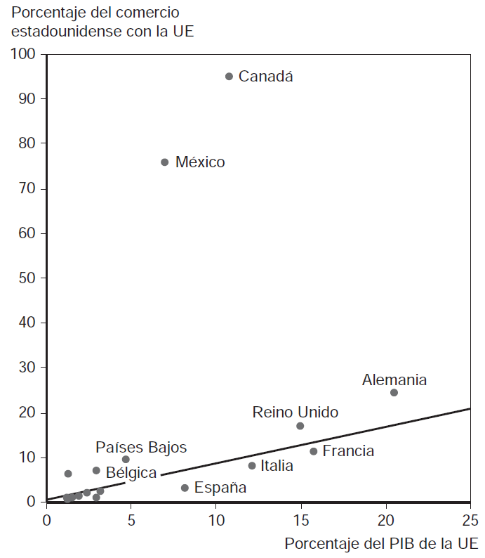Política comercial
Política comercial
- Aún con todo lo dicho en relación al tamaño de las economías, la distancia (geografía) y los acuerdos comerciales, existen desde siempre incentivos a restringir el comercio internacional en oposición al nacional
- Existencia de otro tipo de barreras formales
- Crisis económicas
- Razones de ideología política
- En otras palabras, una gran mayoría de países aún implementan y con bastante frecuencia política comercial
Política comercial (cont.)

Política comercial (cont.)
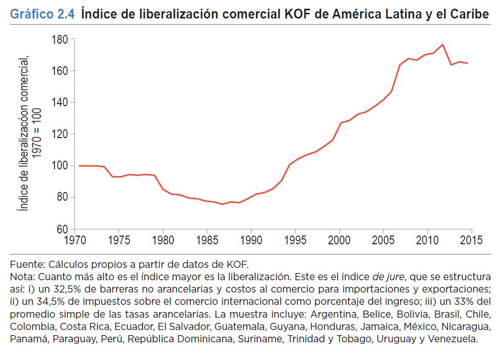Política comercial (cont.)
- Otras evidencias reflejan el hecho de que aún a pesar de la cercanía geográfica, las fronteras político-administrativas tienen un efecto negativo sobre el comercio
- Aplicación \(\longrightarrow\) las provincias canadienses comercian significativamente más entre sí que con los estados de EEUU
- En todos los casos, el comercio entre la Columbia Británica y una provincia canadiense es mucho mayor al que existe entre aquella y un estado equidistante de EEUU
Política comercial (cont.)
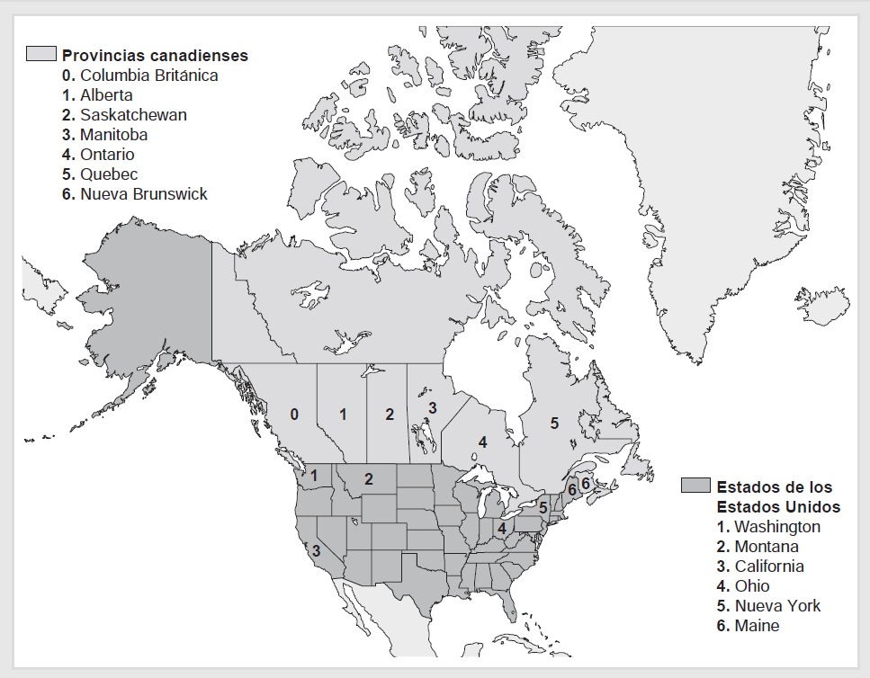Política comercial (cont.)
| Pcia (Canadá) | Comercio (%) | Comercio (%) | Estado (EEUU) |
|---|---|---|---|
| Alberta | 6.9 | 2.6 | Washington |
| Saskatchewan | 2.4 | 1.0 | Montana |
| Manitoba | 2.0 | 0.3 | California |
| Ontario | 1.9 | 0.2 | Ohio |
| Quebec | 1.4 | 0.1 | Nueva York |
| N. Brunswick | 2.3 | 0.2 | Maine |
Política comercial (cont.)
- ¿Por qué tienen las fronteras político-administrativas un efecto tan negativo sobre el comercio de bienes y servicios? \(\longrightarrow\) costos de transacción [unidades 8 y 9]
- ¿Por qué el patrón de comercio internacional es tan cambiante?
- el mundo debería ser mucho mas pequeño hoy con todos los avances tecnológicos
- sin embargo, rol de las fuerzas políticas [unidad 8; Economía Política Internacional]
- mundo pequeño entre 1870 y 1914; mundo fragmentado entre 1914 y 1970; mundo pequeño con desintegración vertical desde 1970; desde 2000’s ¿mundo global, política nacional?
- Aún a pesar de estas consideraciones, el mundo luce cada vez más entrelazado
Política comercial (cont.)
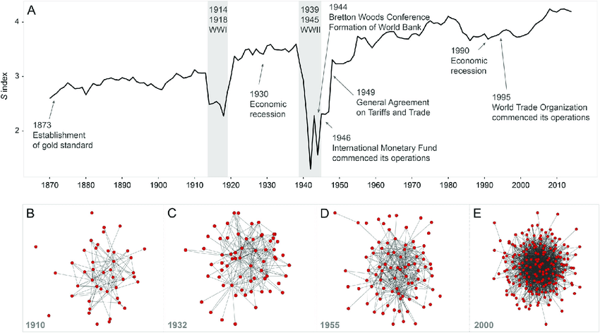Evolución de la estructura de la red de comercio global. [Fuente: Correlates of War Project Data Set]